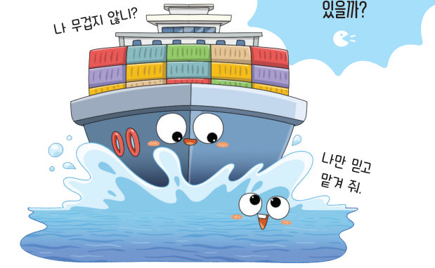
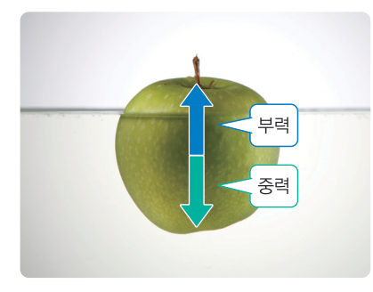
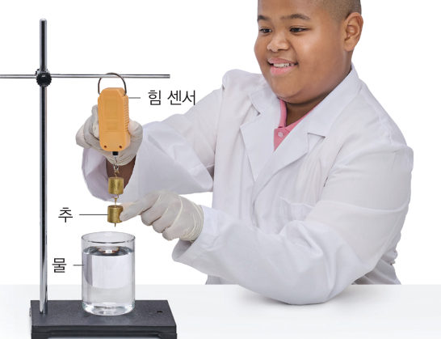
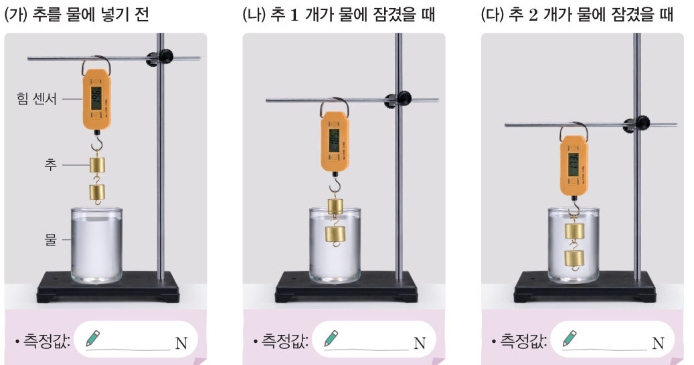
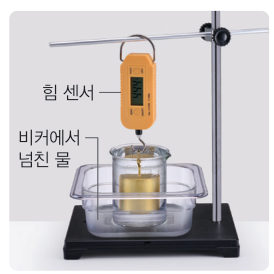
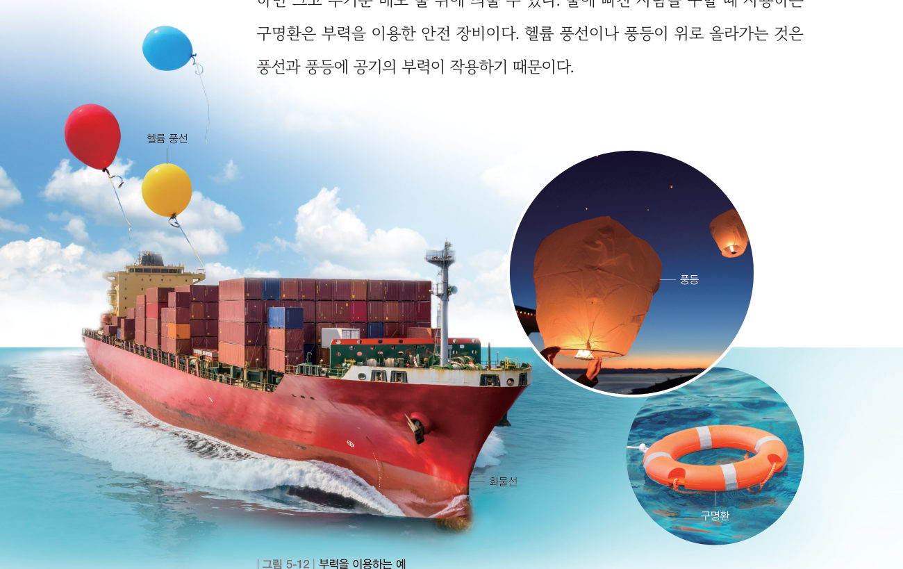
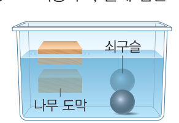
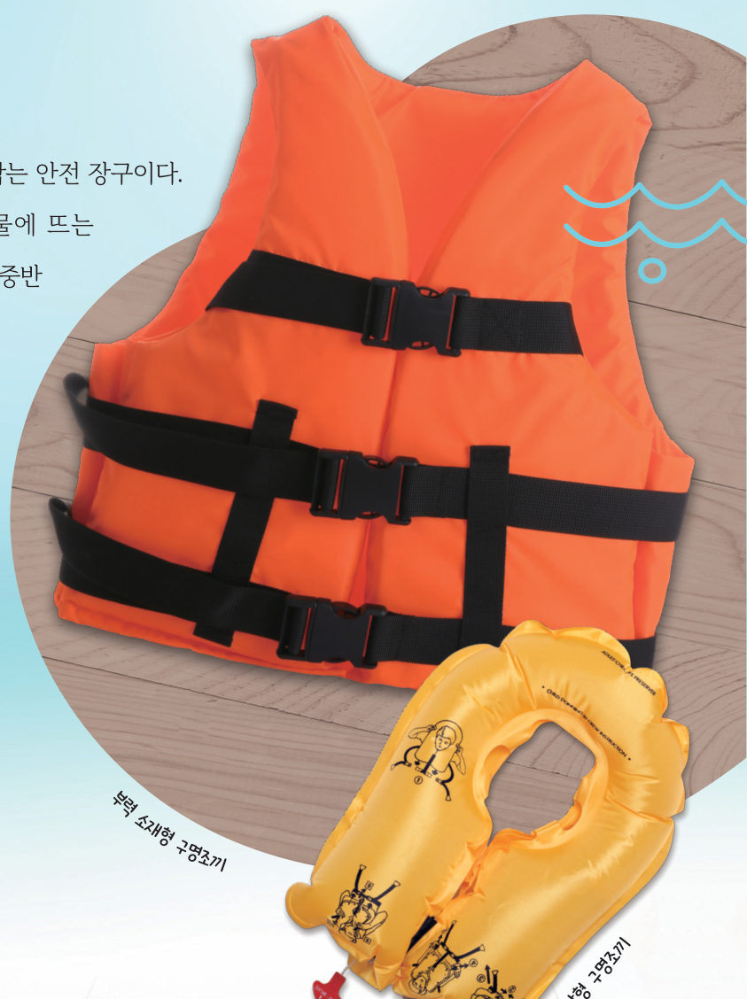

떠오르게 하는
힘
“나 무겁지 않니?” “나만 믿고 맡겨 줘.” 무거운 배가 어떻게 물 위에 뜰 수 있을까? 3D 실험대에서 추를 물에 담그며 힘 센서의 값이 어떻게 변하는지 측정해 보자.

사과를 물에 넣으면 사과가 물 위로 뜬다. 이는 물이 밀어 올리는 힘이 사과에 작용하기 때문이다. 액체나 기체가 물체를 밀어 올리는 힘을 부력이라고 한다. 그림 5-11과 같이 부력은 중력과 반대 방향으로 작용한다.

- 물이 담긴 컵을 스탠드 위에 올려놓고, 힘 센서를 스탠드에 건다.
- 추 2개를 힘 센서 아래로 나란하게 걸고, 추가 물에 닿지 않게 스탠드의 높이를 조절한다.
- 자료 수집 (가)와 같이 추를 물에 넣기 전 힘 센서에 표시된 추의 무게를 기록한다.
- 자료 수집 (나)와 같이 추 1개만 물에 잠기게 한 뒤 측정값을 기록하고, (다)와 같이 추 2개를 물에 완전히 잠기게 한 뒤 측정값을 기록한다.
- (나)와 (다)에서 (가)에 비해 감소한 측정값을 구하여 기록한다.

정리해 볼까
다르게 해 보기 · 넘친 물의 무게와 부력의 크기 관계 알아보기

👉 위 가상 실험에서 ‘넘친 물 받기’를 켜 보세요.
탐구에서 추가 물에 잠기면 추에 부력이 작용하여 측정값이 추의 원래 무게보다 작아진다. 이때 감소한 측정값은 추에 작용하는 부력의 크기와 같다. 또 추 한 개가 물에 잠겼을 때보다 두 개가 잠겼을 때 추에 작용하는 부력이 더 크다. 이와 같이 물체에 작용하는 부력의 크기는 물에 잠긴 물체의 부피가 클수록 커진다.
우리는 부력을 그림 5-12와 같이 생활에서 다양하게 이용하고 있다. 부력을 이용하면 크고 무거운 배도 물 위에 띄울 수 있다. 물에 빠진 사람을 구할 때 사용하는 구명환은 부력을 이용한 안전 장비이다. 헬륨 풍선이나 풍등이 위로 올라가는 것은 풍선과 풍등에 공기의 부력이 작용하기 때문이다.



구명조끼는 물에 빠진 사람의 몸을 뜨게 하여 사고를 막는 안전 장구이다. 기록에 따르면 노르웨이 어부들이 비상 탈출용으로 물에 뜨는 나무 도막이나 코르크 등을 사용한 것에 착안하여 19세기 중반 영국에서 현재와 같은 조끼 형태의 구명조끼를 만들었다.
현재 사용하는 구명조끼에는 공기를 불어 넣어 부풀어 오르게 하는 팽창형과 물에 뜨는 소재를 사용하는 부력 소재형이 있다. 팽창형은 평소에 접어 둘 수 있어 보관이 편리하지만 사용하기 전에 공기를 넣어 부풀리는 시간이 필요하다. 반면 부력 소재형은 큰 부피를 차지하지만 바로 사용할 수 있다. 따라서 비행기에는 보관이 편리한 팽창형을 마련해 두고, 수영장, 선착장 등에는 언제든지 바로 사용할 수 있도록 부력 소재형을 마련해 둔다.
③ 무거운 배가 물 위에 뜨게 하는 힘이 부력이다.
④ 부력은 물체에 모든 방향으로 작용한다.
⑤ 부력은 액체와 기체 속에서 모두 작용한다.
⑨ 부피는 같고 무게가 다른 물체 A(중간에 떠 있음)와 B(바닥에 가라앉음)가 받는 부력의 크기는 .
⑩ 무게 10 N인 추를 물속에 넣었더니 6 N이 되었다. 같은 추 3개를 모두 물에 잠기게 하면 추 3개에 작용하는 부력은 N이다.
4부력
(2) 부력의 방향: 과/와 반대 방향
(3) 부력의 크기: 물에 잠긴 물체의 이/가 클수록 크다.